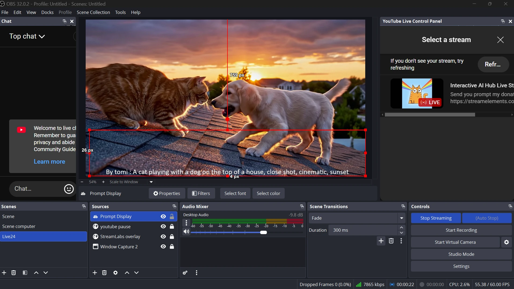

The collaborative AI Gen TV
November 2025
Live Stream Replay
Inspiration
Inspired by Google's AI Flow, the recent hype around generative AI video, and interactive streaming experiences. This project is designed for entertainment, aiming to gather people for a fun and surprising experience. It simultaneously demonstrates the remarkable power of AI video generation and playfully educates users on how to craft effective video prompts.
What it does

This project allows viewers of a YouTube stream to donate with a prompt included in their message. This prompt is used to generate a unique AI video that is then shown on the stream for everyone to see, along with the donor's name and the prompt they submitted.
The prompt is sent to a Cloud Run service that uses an agent-based workflow to generate a video. This video is then pulled by the streaming PC to be displayed. The newly generated video is shown first. After it finishes, a loop of previously generated videos (from the streaming session) plays randomly, one after the other.
We can use a streaming software like OBS to capture this video output and the
associated prompt (displayed from a text file). This entire feed is then broadcast to the
YouTube Live stream. After a few minutes, the viewer who made the donation sees their generated
video appear live on stream with their name and prompt.
️How I built it
I built a Cloud Run service that features an orchestrator agent. This orchestrator launches other agents sequentially to handle the video generation pipeline:
- Safety Check Agent: This agent uses the Cloud Natural Language API to check the user's prompt for toxicity. It generates a JSON output with a toxicity level.
- Decision Agent: Based on the toxicity level, this agent decides the next
step.
- Safe: The original prompt is used.
- Borderline: The prompt is slightly modified to be safer.
- Toxic: The prompt is entirely replaced with a safe, generic one.
- Worker Agent: This agent uses the Vertex AI API to generate a Veo video based on the new JSON payload. It generates a "fast" or "normal" quality video depending on the donation amount specified in the JSON. The final video is then stored in a Google Cloud Storage (GCS) bucket.
- Final Worker Agent: This agent confirms whether the entire workflow finished successfully or failed.
This Cloud Run service can be triggered in two ways: either from a simple UI admin interface built for the jury to test the system, or from the live streaming setup.
How the streaming setup works
When the YouTube live stream is active, viewers can make donations. I use StreamElements for this, as my YouTube channel is new and does not have native channel donations enabled.
These donation events are captured and processed by a local streaming bot (Streamlabs Chatbot) on my PC. The bot checks the donation amount:
- $2 - $5: Triggers a "fast" video generation.
- Over $5: Triggers a "normal" quality Veo generation.
The bot then initiates a two-step process:
- It runs a script to retrieve a GCP identity token to securely call the Cloud Run service.
- It launches a C# program that uses this token to make an authenticated call to the Cloud Run service. This program generates the correct JSON payload, including the user's message (prompt), the requested quality, and the donor's username.
This payload is what kicks off the Cloud Run agent-based service described above.
On the streaming PC
A separate Python program on the streaming PC continuously monitors the GCS bucket. When a new video and its associated prompt file appear, the program downloads them.
- It launches an FFmpeg instance to play the newly generated video file.
- Simultaneously, it updates a local text file (
prompt.txt) with the prompt associated with that video. - When the new video finishes, the program queries a local SQL database to select and play a random video that has already been shown during the stream, creating a continuous replay loop.
Finally, OBS is set up to capture two sources: the FFmpeg player window
and the prompt.txt file. This combined view is what is broadcast to the YouTube
Live stream.